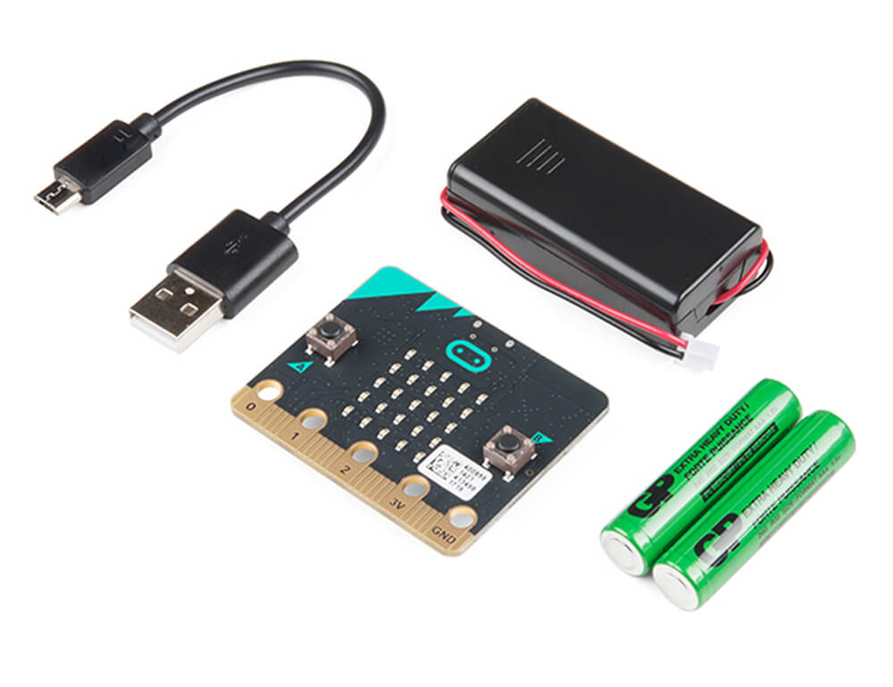
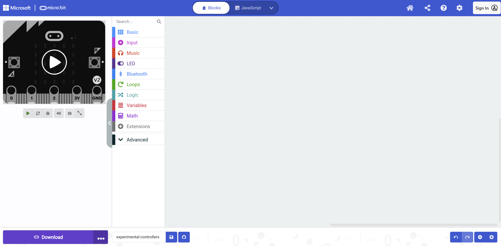
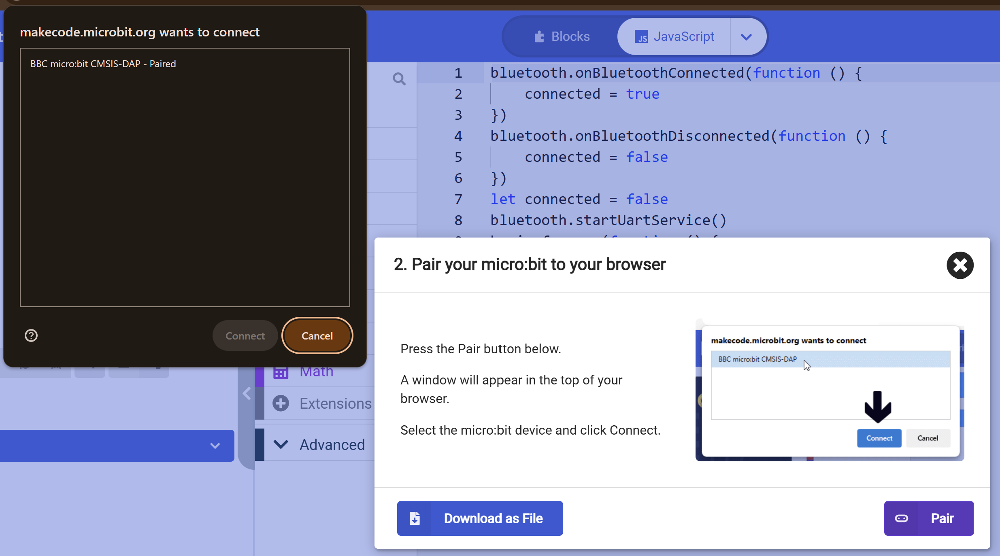
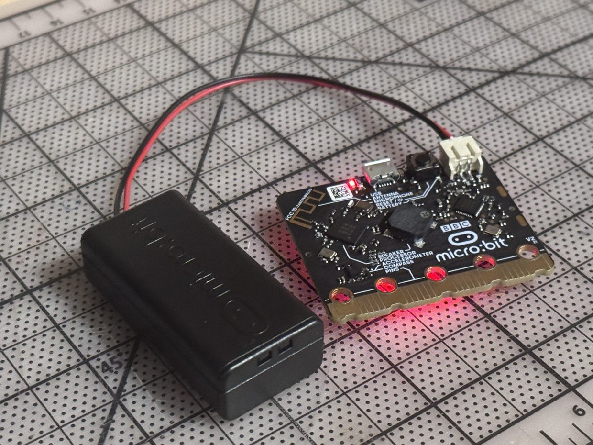
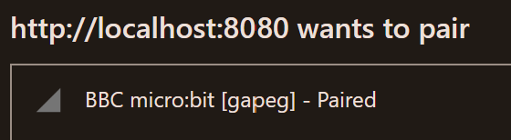

Fidget Camp 2026 · Workshop
Turn Anything into a Game Controller
What if a pair of scissors, a stuffed animal, or your own voice could control a video game? In this hands-on workshop, you'll work in teams to build delightfully ridiculous new ways to play a classic video game.
Set up your micro:bit
A one-time setup: open the ready-made project, paste in the starter code, flash it, find your board's Bluetooth name, and connect. Takes a couple of minutes.
-
1
Grab a micro:bit v2
You'll need a micro:bit v2 and a USB cable. A battery pack is handy once you unplug from the computer.

-
2
Set up MakeCode
Open the blank starter project in MakeCode, then click Edit Code in the top right. This file already has Bluetooth settings pre-configured, so make sure to work from here. You should see an interface like the one below.

-
3
Copy the starter code
Switch to the JavaScript tab at the top of the page and paste this code into the editor:
bluetooth.startUartService() let connected = false bluetooth.onBluetoothConnected(function () { connected = true }) bluetooth.onBluetoothDisconnected(function () { connected = false }) basic.forever(function () { if (connected) { basic.showIcon(IconNames.Yes) } else { basic.showString(control.deviceName()) } }) -
4
Flash code to your micro:bit
Your micro:bit must be plugged into your computer to receive new code. Plug the micro:bit in over USB, then click Download in the bottom right of the MakeCode editor. If this is your first time downloading, follow the pop-up instructions to pair your board to your browser.

A red light on the back of the board will blink while it copies code, then stop when it's done.
-
Go cordless Optional
Once the code is flashed it stays on the board, so if you're done iterating you can unplug the USB cable and run the micro:bit off a battery pack instead — handy for building a controller you can pick up and move around.

-
5
Find your micro:bit's name
Every micro:bit has a unique five-letter Bluetooth name and shows up as
BBC micro:bit [·····](five letters of its own). Your board is now scrolling that five-letter code across the LEDs — note yours so you can spot it in a room full of boards. -
6
Pair your micro:bit via Bluetooth
Click Connect in the top bar of this page. In the browser's Bluetooth list, pick the
BBC micro:bit [·····]that matches your five letters. The board will display a checkmark, the status dot will turn green, and any inputs you've configured will appear on the Live visualizer.
FYI - if you refresh this page, you'll need to re-pair.

Design your controller
Pick the inputs your controller will use, copy the code it generates into MakeCode, then build your object around them. No coding required.
-
1
Enable inputs
Check every input your controller will use — pins also pick how they're wired. The code and build tips below update as you go.
-
2
Copy your code
Paste this over everything in the JavaScript tab of your MakeCode project (Setup, step 3), then Download to flash it. You can switch to Blocks view anytime to see and tweak it visually.
-
3
Build your controller
Wire up each input and turn your object into a controller. Then hit Connect in the top bar and open Live to check every input responds.
Play
Decide what each part of your controller should do, then fly through the gaps without hitting a pipe. Space, tap, and the Flap button always remain available.
Wire your controller
Choose or drag an input to a compatible game port. Live values help you test every connection.
Your inputs
Game controls
Choose an input, then choose a compatible game port.
Connections
Adjust how raw readings become game controls.Nothing is wired yet.
Loading game…